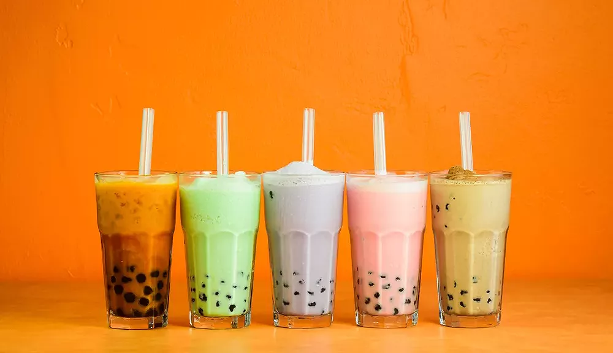
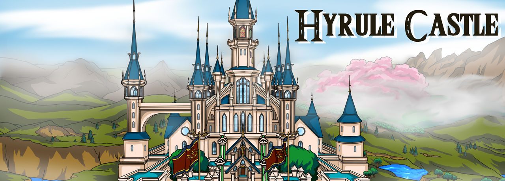
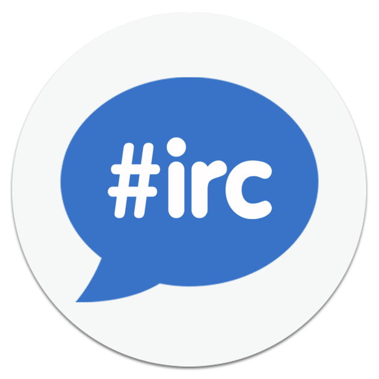

Création d'un site e-commerce

Le projet portait sur la création
d'un site e-commerce dédié au Bubble Tea, et nous
avons travaillé en groupe de trois personnes en utilisant le
framework Laravel de PHP. Ma responsabilité consistait
à concevoir la partie Front-end, en mettant en œuvre des mises en
page structurées. Dans le cadre de ma contribution, j'ai développé
la page d'accueil, en veillant à créer une interface attrayante et
conviviale pour les visiteurs du site. Pour cela, j'ai utilisé
des concepts avancés de HTML et CSS, en intégrant
également des mises en page (layouts) pour assurer une cohérence
visuelle sur l'ensemble du site. En ce qui concerne les
fonctionnalités, j'ai mis en place le menu des produits , offrant une
présentation des différents types de Bubble Tea disponibles.
Pour améliorer l'expérience utilisateur, j'ai également développé
la section du panier d'achat, permettant aux
utilisateurs de sélectionner leurs articles préférés et de passer
facilement à la phase de paiement.
Quant à mes co-équipières, elles se sont concentrées sur la mise
en place de la base de données , élément essentiel pour stocker les
informations des produits, des utilisateurs et des
transactions.
À la fin de nos travaux respectifs, nous avons procédé à
la fusion du Back-end et du Front-end pour assurer le
bon fonctionnement global du site. Cette collaboration a permis de
créer un site e-commerce fonctionnel , offrant une
expérience utilisateur optimale pour les amateurs de Bubble Tea,
allant de la découverte des produits sur la page d'accueil à la
finalisation des achats grâce au panier d'achat bien conçu.
Projet Hyrule castle
Au fil du projet, l'accent a été mis sur l'application des concepts fondamentaux de TypeScript pour garantir une codebase robuste et maintenable. Nous avons travaillé à la construction d'un RPG, prenant soin de définir précisément les mécanismes de jeu que nous souhaitions intégrer. Nous avons procédé à la sélection de mods à partir d'une liste préétablie. Chaque mod que nous avons réussi à implémenter avec succès a contribué à l'accumulation de points supplémentaires, ces derniers variant en fonction de la difficulté de chaque mod. Concernant ma contribution spécifique, j'ai été responsable de la création des personnages, attribuant à chacun un rôle distinct en utilisant des structures conditionnelles telles que les instructions "IF" et des boucles comme "FOR". . Cette approche a permis de donner vie aux interactions entre les différents éléments du jeu. Dans l'ensemble, ce projet a représenté un défi stimulant qui nous a permis d'approfondir nos connaissances en TypeScript tout en créant un jeu interactif basé sur des fondements algorithmiques et mathématiques solides.
My IRC
Dans le cadre de notre projet en groupe, nous avons collaboré étroitement pour développer notre propre IRC (Internet Relay Chat) en utilisant TypeScript, ExpressJS et Socket.io . Notre objectif était de créer une interface web simple permettant aux utilisateurs de se connecter instantanément, de participer à des discussions de groupe, d'échanger des messages privés. Pour atteindre cet objectif, nous avons divisé le projet en plusieurs étapes clés. Tout d'abord, nous avons mis en place le serveur en utilisant Express , établissant ainsi la fondation de notre application. Ensuite, nous avons travaillé ensemble sur la gestion des messages en utilisant Socket.io , permettant une communication en temps réel entre les utilisateurs via une interface web. Ce projet nous a offert une opportunité précieuse de renforcer nos compétences en développement web en temps réel, de travailler en équipe et d'appliquer concrètement nos connaissances en TypeScript.
Création d'un site avec un API

En entreprenant le développement d'un projet API , j'ai opté pour l'utilisation du langage Node.js avec Express, et la base de données MySQL pour créer une infrastructure robuste. Dans cette aventure, j'ai commencé par la conception minutieuse de ma base de données, intégrant des tables clés telles que 'users/admins', 'produits', 'commandes' et 'panier' , tout en établissant des relations pour garantir la cohérence des données. Le cœur du projet résidait dans la mise en place des opérations CRUD , une tâche que j'ai abordée avec soin pour assurer la gestion efficace des entités du système. Une attention particulière a été portée à la gestion des rôles entre utilisateurs et administrateurs, avec la mise en œuvre de mécanismes de sécurité visant à restreindre l'accès aux actions appropriées. La containerisation de l'application avec Docker a été une étape clé, offrant une portabilité accrue et simplifiant le processus de déploiement. Ensuite, j'ai exploré le déploiement sur le cloud en utilisant Terraform comme outil d'infrastructure en tant que code, permettant une gestion flexible et évolutive de l'environnement cloud. Enfin, j'ai complété le projet en ajoutant une couche frontend, créant une interface utilisateur attrayante avec React, . Cette interface a facilité l'interaction intuitive entre les utilisateurs et l'API, complétant ainsi un parcours de développement complet, de la conception initiale à la réalisation pratique du projet. Dans l'ensemble, cette expérience m'a non seulement permis de consolider mes compétences techniques, mais aussi de comprendre l'importance de l'architecture logicielle complète dans la réussite d'un projet de développement.